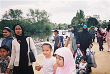
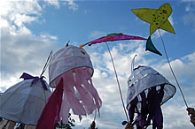
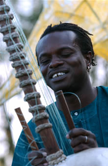
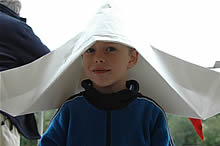
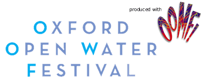
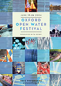

Skip Navigation | Home | Contact | Picture Gallery | Projects
 |
 |
 |







| June 19 - 26 2004 |
Water is one of the world's most precious commodities. Oxford is an 'island city' and one of the furthest points from the sea in the country.
Oxford Open Water Festival celebrated water in Oxfordshire in all its manifestations in a creative celebration of water and the waterways. The festival illustrated how Oxford's local relationship with water extends far beyond the reaches of the Thames, Cherwell and Oxford Canal.
'Hydrogen Two Oxygen' was the highlight of the festival week and the 'Oxfordshire Heritage Boat Journeys' provided two creative journeys from the edge of Oxfordshire meeting on the Thames in Oxford.